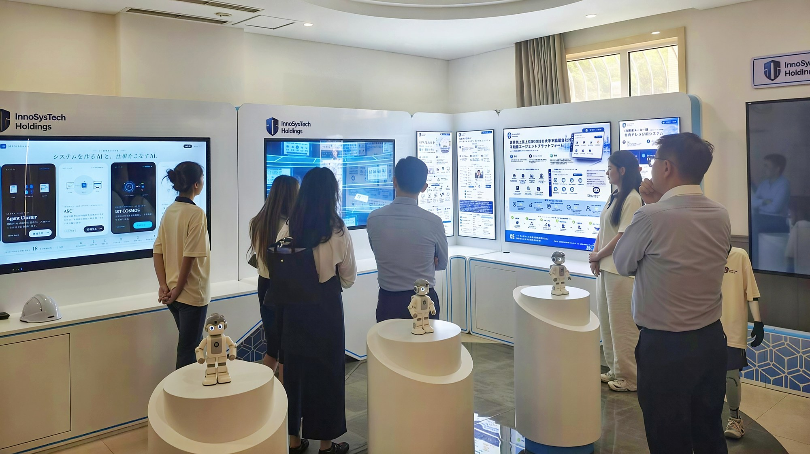
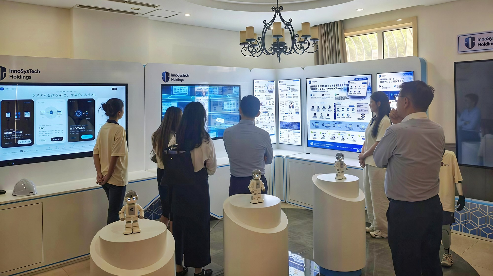
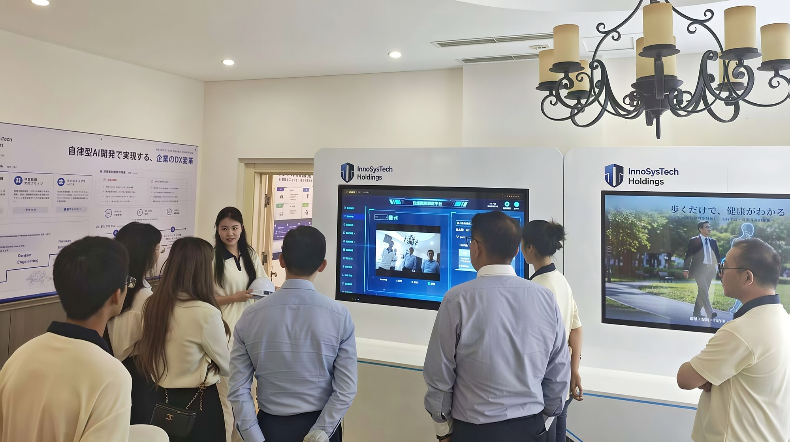
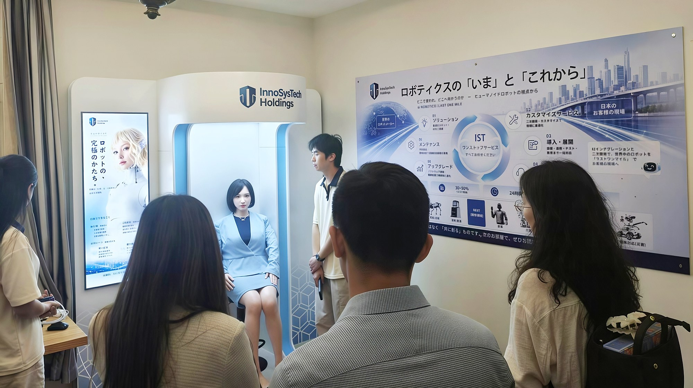

| 企業名 | 国 | 業種 | AI 活用内容・効果 | 出典 |
|---|---|---|---|---|
| Tesla × バイトダンス（ByteDance） | 🇺🇸 | 自動車／車載AI | 中国大陸向けEVの車載音声システムに、バイトダンスのLLM 豆包（Doubao） を統合。音声ボタンひとつで エンドツーエンドの自然対話 が可能になり、従来の「一問一答型」を超えた車載AI体験を実現した。 | Xinhua（8/20） |
| 百度・文遠知行・小馬智行（Pony.ai） | 🇨🇳 | 自動運転／Robotaxi | 中国RobotaxiがUAEで商用化を加速。百度「蘿蔔快跑（Apollo Go）」はドバイで完全無人運転の試験許可を取得して3月から商業運行を開始、年末までに 数百km²・数百台 規模へ拡大。文遠知行・小馬智行も中東展開を進める。 | 人民網日本語版（8/12） |
| シャオミ（小米） | 🇨🇳 | 製造／EV工場 | 次世代人型ロボット CyberOne をWRC 2026で初公開。自社のEV工場で部品の仕分けやナット締結などの実作業に従事し、ナット締結の成功率を 90.2%→98% に向上させた。 | 36Kr Japan（8/27） |
| 味坊集団 | 🇯🇵 | 外食／調理ロボット | 都内のガチ中華人気チェーンが茨城に新店を開業。回鍋肉などの炒め物を 自動調理ロボット が担い、2分足らず で完成、調味料も自動投入で 味が均一。料理人不足と円安が背景で 1台280万円 のロボット2台を導入、将来は 1〜2人＋ロボット での運営を目指す。 | 36Kr Japan（8/29） |
| Anthropic | 🇺🇸 | 創薬／バイオAI | Claude（Mythos Preview／Opus 4.8） のタンパク質バインダー自律設計実験を公表。全工程を自律で完走し 15標的のうち14 で成功、独立2機関の検証で 1,320設計中354 が有効。ヒット率 22〜35% は従来の典型値（10〜15%）を大きく上回る。 | Anthropic 公式（8/18） |



